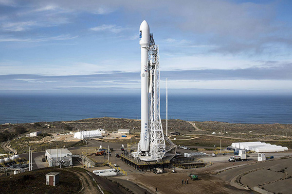

Falcon — серия ракет-носителей, разработанных американской компанией SpaceX. Все ракеты серии — двухступенчатые и используют жидкостные ракетные двигатели, топливными компонентами для которых являются керосин и жидкий кислород. Свое название ракета получила в честь звездолета «Тысячелетний сокол» из фантастической эпопеи «Звездные войны».
Компания SpaceX, принадлежащая знаменитому миллиардеру Силиконовой долины Илону Маску не смотря на свою известность, является довольно молодой — она вышла на рынок космических полетов только в 2002 году. На начальном этапе, ее главной ставкой была легкая РН Falcon 1 –дешевая ракета ($7,9 млн. за запуск) могла при минимальном бюджете доставить около тонны груза в космос. Falcon 1 была простой двухступенчатой жидкостной ракетой, первая ступень которой оснащалась одним двигателем Merlin 1A, а вторая ступень одним двигателем Kerstel. Ракета летала 5 раз, из которых 3 пуска оказались неудачными. SpaceX добились не плохих технологических результатов (учитывая, что опыта, практически, не было), но ошиблись с нишей рынка – оказалось, что спроса на грузы до 1 тонны почти нет и ракета была не востребована. В 2009 году пуски ракет Falcon 1 были завершены. Однако, главный козырь SpaceX оставался – простой и дешевый, при этом – мощный и надежный двигатель Merlin 1, созданный компанией был в распоряжении и модернизировался. А для ракеты – двигатель – самая главная деталь. Уже к концу первого десятилетия XXI века SpaceX готовилась заменить легкую Falcon 1 на более мощную Falcon 9, первая ступень которой оснащалась уже девятью двигателями Merlin (отсюда и номер в наименовании ракеты). В отличие от предшественника, Falcon 9 могла забросить на опорную орбиту до 9 тонн полезной нагрузки и, в этом уже могла конкурировать с «хозяевами» рынка космических пусков: ракетами Союз-2, Атлас-5 и Дельта-4.
Falcon 9 – двухступенчатая жидкостная ракета-носитель среднего класса.
Falcon 9 изначально создавалась с расчётом на повторное использование. На первую ступень ракеты-носителя установлено оборудование для её возврата и вертикального приземления на посадочную площадку или плавающую платформу Autonomous Spaceport Drone Ship (она так же получила более известное имя Of course I still love you — Конечно, я тебе по-прежнему люблю), с использованием собственных двигателей. Вторая ступень одноразовая. В декабре 2015 года после доставки на орбиту 11 спутников, первая ступень ракеты Falcon 9 FT впервые успешно вернулась на Землю.
Первая ступень ракеты построена по стандартной для ракетостроения схеме: двигательный блок, над которым снизу вверх расположены топливный бак и бак окислителя. Оба бака алюминиево-литиевые. В качестве топлива применяется керосин, в качестве окислителя – жидкий кислород.
Двигательный блок ракеты составлен из девяти жидкостных двигателей Merlin. В версии 1.1 двигательный блок был перестроен в сравнении в базовой версией 1.0. У версии 1.0 девять двигателей были выстроены в 3 ряда, создавая квадратную форму, у версии 1.1 8 двигателей выстроены по кругу, а девятый в центре.
Первая ступень соединяется с второй композитным промежуточным адаптером, скрывающим двигатель второй ступени.
Вторая ступень – фактически, уменьшенная версия первой. Идеология тотальной экономии для снижения стоимости ракеты, принятая в SpaceX, заставляет конструкторов идти на максимальную унификацию модулей. Вторая ступень использует те же материалы, инструменты и техпроцессы. Стенки баков для топлива и окислителя из сверхпрочного алюминий-литиевого сплава являются несущей конструкцией ступени. Также использует в качестве компонентов топлива керосин и жидкий кислород.
На второй ступени используется один жидкостный ракетный двигатель Merlin Vacuum – модификация базового двигателя для работы в космосе. Отличается значительно увеличенным соплом для оптимизации работы двигателя в вакууме. Двигатель может быть перезапущен многократно для доставки полезной нагрузки на различные рабочие орбиты.
4 июня 2010 состоялся первый запуск Falcon 9.
Всего на текущий момент было произведено 129 запусков и 89 приземлений